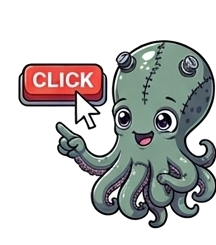
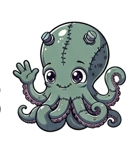
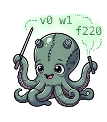
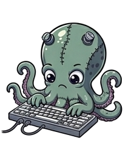
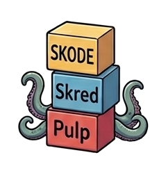
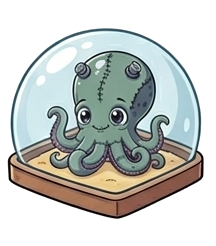
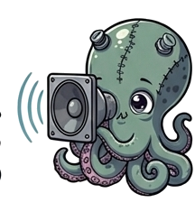
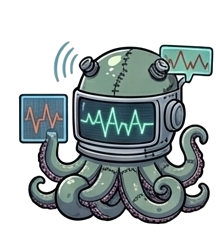
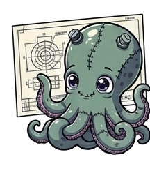
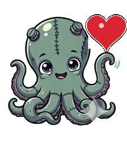

skred

1')" alt="Osko the Octopus">Weird Live Audio Coding & Making Noise with the BEAM
Who Am I?

2')" alt="Osko the Octopus">- Joe Stewart (aka octetta).
- Principal Firmware Engineer.
- Audio Programmer & BEAM Enthusiast.
- Creator of skred.
0 to Noise in One String

3')" alt="Osko the Octopus">Everything you hear is driven by tiny ASCII strings.
Pure real-time C DSP synthesis running right now.
Try it: v0 w0 f440 a-15 t .01 1 0 0 l1
Why Audio is Weird & Hard

4')" alt="Osko the Octopus">- Hard-Realtime Audio Threads: Zero syscalls, zero
malloc/free, zero mutexes, zero GC pauses. - Unbounded Latency = Glitches: Even a 1ms hitch causes instant clicks and buffer underruns.
- BEAM vs Audio: BEAM is built for concurrency and fault tolerance, not microsecond sample render callbacks.
- The Decoupled Solution: Let C crunch lock-free, zero-alloc DSP math; let the BEAM conduct the orchestra!
The Architecture

5')" alt="Osko the Octopus">Pure C Engine Core: Lock-free, zero-alloc audio loop driven by text commands.
🌐 Target A: Browser (WASM)
Zero-install audio sandbox. Runs right in the browser on everyone's phones and laptops today via WebAssembly.
⚡ Target B: Native BEAM
Ultra-low-latency headless audio engine for desktop, Linux servers, Raspberry Pis, and live performance rigs.
Orchestrating from the BEAM

6')" alt="Osko the Octopus">Option 1: Managed Port (open_port)
- Tied directly to the OTP supervision tree.
- Simple lifecycle via stdio pipes.
- Crash together, restart together.
Option 2: UDP Daemon (gen_udp)
- Detached background daemon process.
- True crash isolation: restart or hot-reload BEAM nodes without dropping audio buffers!
Bonus: MIDI controllers and hardware inputs can map directly into BEAM actors and fire skode strings in real time.
Hands-On: Make Some Noise!

7')" alt="Osko the Octopus"> Interactive Playground
Interactive Playground(help.html)
 Syntax Cheatsheet
Syntax Cheatsheet(skode_reference)
v0 n60 a-15 l1→ Voice 0, Note 60 (Middle C), Amplitude -15dB, Level trigger- Case context:
f(freq) vsF(modulation) | Punctuation:?inspect,/control
Live Demo & Amiga Climax

8')" alt="Osko the Octopus">Live SFX patterns directly triggered in real-time:
Click a button above to inspect skode...The Retro Climax: Amiga .MOD Tracker Replay
Track: "Elysium" by Jester (Sanity demo) running via Emscripten VFS: [amiga.zip] %z
What Else Can You Build?

9')" alt="Osko the Octopus">- Live Data Sonification: Phoenix LiveView server alerts, spike tempos on queue backlog, FM buzz on error rates.
- Multiplayer Web Games: Phoenix Channels broadcasting lightweight skode strings to browser clients.
- Type-Safe DSLs: Build an expressive Gleam or Elixir DSL compiling down to skode.
- Hex Packages & Libraries: Help build the official
hex.pmclient library and OTP GenServer wrappers!
Credits, Links & Q&A

10')" alt="Osko the Octopus">Intro Music: Gadgetto (Bicycling Holding Dolly Oh-O-Ho)
Demo Track: Elysium by Jester (Amiga demo by Sanity)
Engine Core: github.com/octetta/pulp
Slides & Playground: github.com/octetta/skred-web
 octetta/skred-web
octetta/skred-web